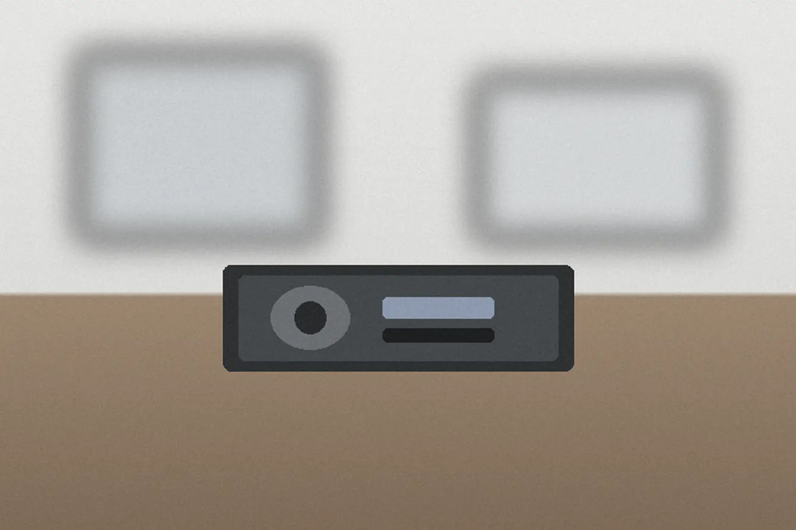
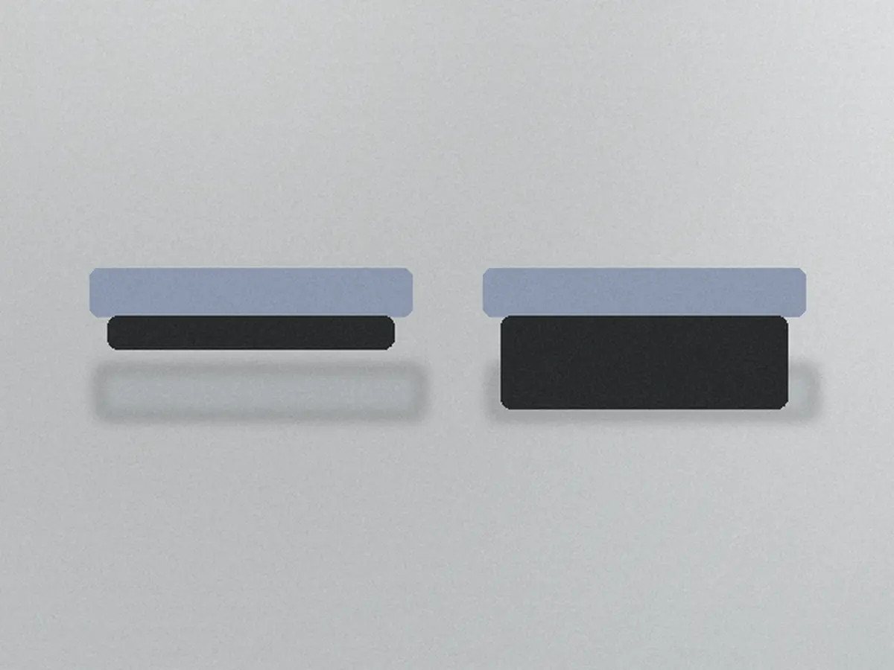
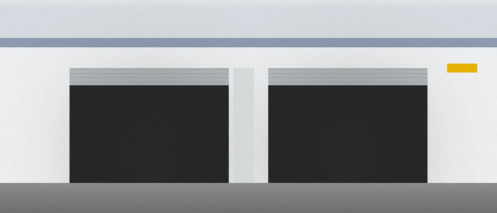

トップ車検の費用と流れ
車検の費用と、
追加費用が出る条件
- 作業の名前
- 車検法定の24か月点検と検査
- 所要時間
- 1〜2日車の大きさで変わります
- 費用の目安
- 48,500〜86,900円税込・法定費用を含む合計
見積もりを問い合わせる見積もりは無料

画像はAI生成のイメージです
02-1内訳
車の大きさ別の、
車検費用の内訳
| 項目 | 軽自動車 | 小型〜1.0t | 中型〜1.5t | 大型〜2.0t |
|---|---|---|---|---|
| 整備基本料24か月点検と検査の工賃 | 22,000 | 27,500 | 30,800 | 34,100 |
| 法定費用の目安重量税・自賠責・印紙 | 26,500 | 36,400 | 44,600 | 52,800 |
| 合計の目安 | 48,500 | 63,900 | 75,400 | 86,900 |
| かかる日数 | 1日 | 1日 | 1〜2日 | 1〜2日 |
単位は円・税込。法定費用は年式や重さで変わるため目安です。金額と制度の確かな内容は、見積もりのときにお伝えします。2.5t以上の車はお受けしていません。
整備基本料に含むもの
- 法定の24か月点検と、検査の手続き
- 整備記録（替えなかった部品の、次に替える目安）
含まないもの
- 交換する部品の代金と、交換の工賃
- 法定費用（上の表の別の行）
02-2追加の条件
追加費用が出るのは、
この2つだけです。
| 部品の交換 | 部品を見せて了承をいただいてから。部品代と工賃を、作業の前にお伝えします |
|---|---|
| 引き取りと納車 | 片道 2,200円（税込・工場から5km以内） |
追加費用がかからないもの
| 土曜の受け渡し | 9:00–17:00。日曜・祝日は休み |
|---|---|
| 代車 | 予約制・3台 |

02-3流れ
受付から引き渡しまで
持ち込みから引き渡しまで、6つの段取りで進めます。

| 工程 | 工場がすること | お客様がすること |
|---|---|---|
| 1問い合わせ | 翌営業日までに見積もりを返す | 車検証の写真と走行距離を送る |
| 2入庫 | 代車を用意する（予約制） | 車を工場へ持ち込む |
| 3点検 | リフトで上げて24か月点検。外した部品をトレーに並べる | — |
| 4説明 | 新品と並べて見せる | 替えるかどうかを、その場で決める |
| 5整備と検査 | 決まった部品を替え、検査を受ける | — |
| 6引き渡し | 車と整備記録を渡す | 受け取る。外した部品は希望すれば持ち帰る |
整備後の保証の範囲・期間・対象外は【要確認】。